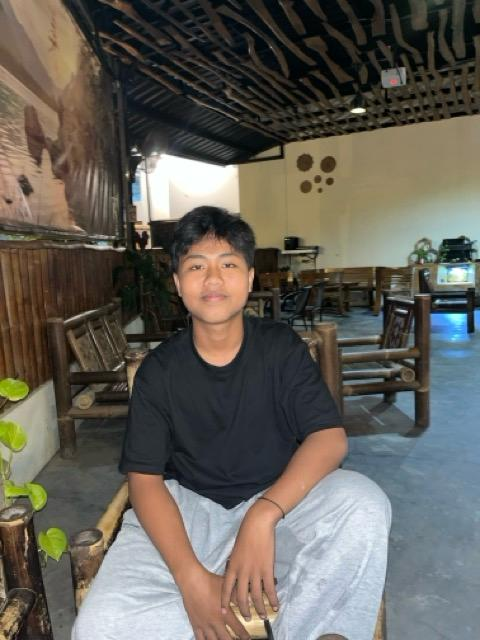

Halo, saya Arya!
Siswa kelas X SMK, calon Junior Web Developer di Kelas Industri UBIG.
Lihat Proyek SayaTentang Saya
Saya adalah siswa kelas X SMK yang sedang mempelajari bidang teknologi informasi. Saya tertarik dengan pengembangan web dan ingin menjadi seorang Junior Web Developer di masa depan.
Hobi
- Nongkrong
- Bermain gitar
- Menonton film
- Mendengarkan musik
- Photo editing
- Menulis diary
- Membaca buku/e-book
Cita-cita
Menjadi Full Stack Web Developer. Langkah yang saya rencanakan:
- Menuntaskan Kelas Industri UBIG sampai Semester 4
- Magang di perusahaan teknologi
- Bekerja sebagai Web Developer
Keahlian
Jadwal Belajar
| Hari | Waktu | Kegiatan |
|---|---|---|
| Senin | 19.00 - 20.00 | Membaca ulang modul |
| Rabu | 19.00 - 21.00 | Mengerjakan tugas praktik |
| Jumat | 19.30 - 20.30 | Merekam video dan menulis laporan |